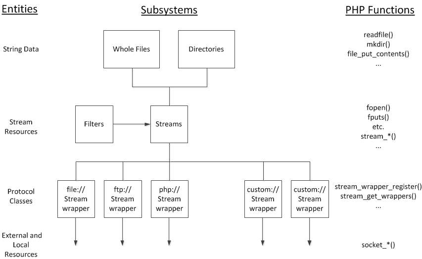
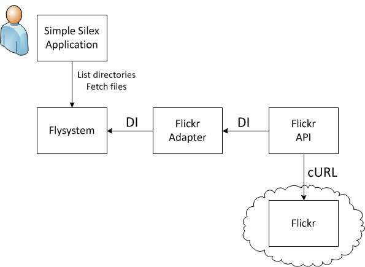

Handling files as single "lumps" of data: strings or arrays.
// read a file as a string
$string = file_get_contents($filename)
// create a file from a string
file_put_contents($filename, $string)
// make a copy of a file
copy($source, $destination)
// move a file
rename($oldname, $newname)
// delete a file
unlink($filename)
Directory Operations
Directories can be created, removed, moved, or scanned for their contents.
// create a directory
mkdir($path)
// delete a directory
rmdir($path)
// move a directory
rename($oldname, $newname)
// scans a directory for its contents
scandir($path)
Resources
A primitive PHP data type
Resource variables references external resource
Resource variables created and destroyed by specialised functions
Resources are not objects
About 120 resource types
Well over 1000 functions for handling resources
One resource type: streams
Streams
A stream is a resource type with streamable behaviour:
Linear sequence of data – a start, middle and end
No structure inherent in the stream data
You progress through a stream, with a pointer tracking where you are
Some streams allow you to rewind or seek to arbitrary points
A stream may be readable/writable/seekable
You choose how to open the stream – read/write/both
A stream maps onto a file, providing access to that file
Advantages of Streams
Good for memory (with enormous files)
Rich set of functions (nearly 50)
Can read enormous directories
Can append to files
Stream Operations
// open a path as a stream
fopen($filename, $mode)
// write a string to a stream
fputs($handle)
// read bytes from a stream
fread($handle, $length)
// jump to a location in a stream (moves the file pointer)
fseek($handle, offset)
// close a stream and destroy the resource
fclose($handle)
// Similar for directories:
opendir(); readdir(); closedir();
// and a bunch of stream_*() functions for manipulating streams
Stream Wrappers (1)
aka Protocol Handlers
Every stream is handled by a wrapper
The wrapper is specified at the start of the path as a scheme: scheme://target
Schemes include: file, ftp, http, php, phar, and more
Default scheme is file://
php:// wrapper gives access to stdin, stdout, memory
Stream Wrappers (2)
All wrappers can be used in whole-file operations we looked at earlier readfile('http://phpne.org.uk/about')
Custom wrappers can be created
Custom Stream Wrappers
Register Your Stream Wrapper
// Register the class
stream_wrapper_register('mywrapper', 'MyStreamProtocol');
// Use the wrapper
$fp = fopen('mywrapper://some/path/to/a/data/source', 'r');
readfile(fp);
fclose($fp);
Custom Stream Wrappers
Define Your Stream Wrapper (1)
class MyStreamProtocol {
// Open a stream
function stream_open($path, $mode, $options, &$opened_path) {...};
function stream_close() {...};
function stream_read() {...};
function stream_write() {...};
function stream_eof() {...};
function stream_tell() {...};
function stream_seek() {...};
...
}
Custom Stream Wrappers
Define Your Stream Wrapper (2)
class MyStreamProtocol {
...
// File-based operations for use with touch(), unlink(), rename(), stat()
function unlink() {...};
function rename() {...};
function rmdir() {...};
function url_stat() {...};
...
}
Custom Stream Wrappers
Define Your Stream Wrapper (3)
class MyStreamProtocol {
...
// Directory-based operations for use with mkdir(), rmdir(), opendir()
function mkdir() {...};
function rmdir() {...};
function dir_opendir() {...};
function dir_readdir() {...};
function dir_closedir() {...};
}
Stream Filters and Options
Filters can be added to streams
Custom filters can be created
Options can be passed to wrappers (called "contexts")
Options are specific to each wrapper
Put it all Together

Why Abstract?
Since the stream wrappers already seem to abstract everything, why abstract more?
One interface for handling files anywhere
Remote storage complexities hidden from the application logic; loose coupling
Swapping storage should be simple and quick; less lock-in
Testing - emulate a filesystem easily
Introducing Flysytem
Composer/packagist installation
Extendable using the adapter pattern
Works on PHP5.3, tested to PHP5.6
Supports streaming and whole files
Caching built-in (DI)
Copy files across different filesystems
Installing
composer install
{
"require": {
"league/flysystem": "0.2.*"
}
}
What is Flysystem
"Flysystem is a filesystem abstraction which allows you to easily swap out a local filesystem for a remote one."
// The filesystem class and the adapter.
use League\Flysystem\Filesystem;
use League\Flysystem\Adapter\Local as Adapter;
// Create a local file filesystem object.
$filesystem = new Filesystem(new Adapter('path/to/root'));
// Get the content of a file.
$file_content = $filesystem->read('sub_dir/myfile.txt');
FTP
Other adapters can be dropped into the constructor:
use League\Flysystem\Filesystem;
use League\Flysystem\Adapter\Ftp as Adapter;
$filesystem = new Filesystem(new Adapter(array(
'host' => 'ftp.example.com',
'username' => 'username',
'password' => 'password',
)));
Dropbox
Some adapters need external libraries to be included:
use Dropbox\Client;
use League\Flysystem\Filesystem;
use League\Flysystem\Adapter\Dropbox as Adapter;
$client = new Client($token, $appName);
$filesystem = new Filesystem(new Adapter($client, 'optional/path/prefix'));
The Dropbox library in turn needs OAuth and its libraries.
It is all nicely handled by DI.
Operations (1)
Writing complete files:
$fs = new Filesystem($adapter);
// Create a new file (including directories) and set permissions
$fs->write($filename, $content)
// Overwrite the contents of an existing file
$fs->update($filename, $content)
// Write or put, depending if file exists
$fs->put($filename, $content)
// Apend to a file?
Operations (2)
Reading complete files:
$fs = new Filesystem($adapter);
// Read the complete contents of a file as a string
$fs->read($filename)
// Tells us if the file exists
$fs->has($filename)
Operations (3)
File operations:
$fs = new Filesystem($adapter);
// Delete a file
$fs->delete($filename)
// Rename or move a file
$fs->rename($filename)
// Copy a file?
Operations (4)
Directory operations:
$fs = new Filesystem($adapter);
// Create a directory (to any number of levels)
$fs->createDir($path)
// Remove a directory
$fs->deleteDir($path)
// Move a directory? Same as renaming a file
$fs->rename($path)
Metadata
Minimum supported metadata for all adapters:
$fs = new Filesystem($adapter);
// Get the Mimetype for a file
$fs->getMimetype($filename)
// Get the last update time for a file
$fs->getTimestamp($filename)
// Get the size of a file in bytes
$fs->getSize($filename)
File Visibility (1)
The visibility of a file: can it be seen by others or just the current user?
// Two states allowed
AdapterInterface::VISIBILITY_PRIVATE // 'private'
AdapterInterface::VISIBILITY_PUBLIC // 'public'
File Visibility (2)
The visibility can be:
set globally, for all new files to take on
set for each file creating operation (write)
applied to existing files
// New files
$fs->write($filename, 'contents', ['visibility' => $visibility]
// Existing files
$fs->getVisibility($filename)
$fs->setVisibility($filename, $visibility)
// Or set globally when instantiating the Filesystem
$fs = new League\Flysystem\Filesystem($adapter, $cache, [
'visibility' => AdapterInterface::VISIBILITY_PRIVATE
]);
File Visibility (3)
Implementation example, for local files
public: 0644 (owner=rw, group=r, other=r)
private: 0600 (owner=rw)
Listing directories (1)
// List the contents of a directory, recursively if required
$fs->listContents($path [, bool $recurse])
Returns an array of arrays
Each item is a "file" or a "dir"
A basename (e.g. myfile.txt) and a path for each item
Any other metadata requested and cached for this item
Any metadata the adapter wants to return
Listing directories (2)
Custom metadata is very useful
$fs->listPaths($path [, bool $recurse])
Return just a list of paths
$fs->listWith($keys, $path [, bool $recurse])
Make sure metadata is requested (fields listed in $keys)
Flysystem and Streams (1)
Use streams instead of strings to read and write files
// Create a file from a stream
$fs->writeStream($filename, $stream)
// Update a file from a stream
$fs->updateStream($filename, $stream)
// Return a file as a stream
resource $fs->readStream($filename)
Flysystem and Streams (2)
There is no copy operation in Flysystem; few if any remote storages support it.
Instead, put two streams back-to-back:
// Copy one file to a new file
$fs->writeStream(
'destination.txt',
$fs->readStream('source.txt')
);
Flysystem and Streams (3)
So far no support for returning a stream to an open file for writing.
Some remote storage would support this, and some would not.
// This would be useful (but not implemented):
$stream = $fs->openWriteStream('destination.txt', 'a');
fputs($stream, 'foo');
fclose($stream);
Alternative Abstractions (1)
php-resource offers a comprehensive OPP wrapper for resources.
shesek offers a simpler OOP wrapper for resources.
KnpLabs/Gaufrette takes a similar approach, and has been around for a couple of years.
discordier/php-filesystem tries to get to some raw file access methods, though seems to have stopped development before many adapters were written. Implements filesystem iterators, which many other libraries do not.
zikula has abstracted the filesystem and is worth looking at for its coverage of operations.
Enhancements - Adapters
Some interesting adapters
BBC iPlayer
Flickr (finish off)
PDO/MySQL
IMAP
Google Cloud Storage
Test adapter skeleton
Enhancements - Features
Support for paged files (using streams)
Writeable streams
Directory listings (and files) as objects
Directory listings as streams
find() operation
Extend permissions
copy() operation
Flyception - Flyserver apdapter that uses a custom stream wrapper that calls the Flyserver adapter for its functionality
Summary
PHP file handling is flexible and powerful
PHP provides some abstraction already
We like to abstract files, directories and streams
Flysystem brings file abstraction into the OOP world
Flysystem makes it easier to swap remote storage in and out
Flysystem is still young, and will develop further
Conclusions
We can no longer assume files will just be written to the local filesystem
An OO wrapper for file access will makes switching storage destinations easier
An agreed interface would be good for portability (PSR?)
Streams and stream wrappers are underused and underappreciated
Streams are still a core part of file handling, and will be for a long time
Flysystem is gaining momentum and is worth checking out...
...but be aware it is still finding its feet
Demo (1)
An adapter to access some of Flickr as an abstract filesystem
Uses OAuth to log into Flickr
Directory structure is emulated, as are the files
Metadata includes various Flickr properties of the images
Demo does not write images at this time, but it would be simple
Demo (2)
The demo architecture

Demo (3)
The demo fetches the contents of a "path" on Flickr
// $app['flickrapi'] is a DI container for the Flickr API
// FlyAdapter is a custom adapter that adstracts Flickr
$filesystem = new Filesystem(
new Academe\Flickr\FlyAdapter($app['flickrapi'])
);
// Get the path from the user.
$path = $request->get('path', '');
// Get the items on Flickr at that path
$items = $filesystem->listContents($flickr_path);
Demo (4)
If a file is selected, then fetch it for display or download
// Filename selected by user
$file = $request->get('file', '');
if (!empty($selected_file)) {
// Get metadata for the file.
$file_metadata = $filesystem->getWithMetadata("$path/$file", array());
// Get the content of the file.
$file_content = $filesystem->read("$path/$file", array());
// The file_content can be streamed, or displayed inline
// depending on its mimetype
}